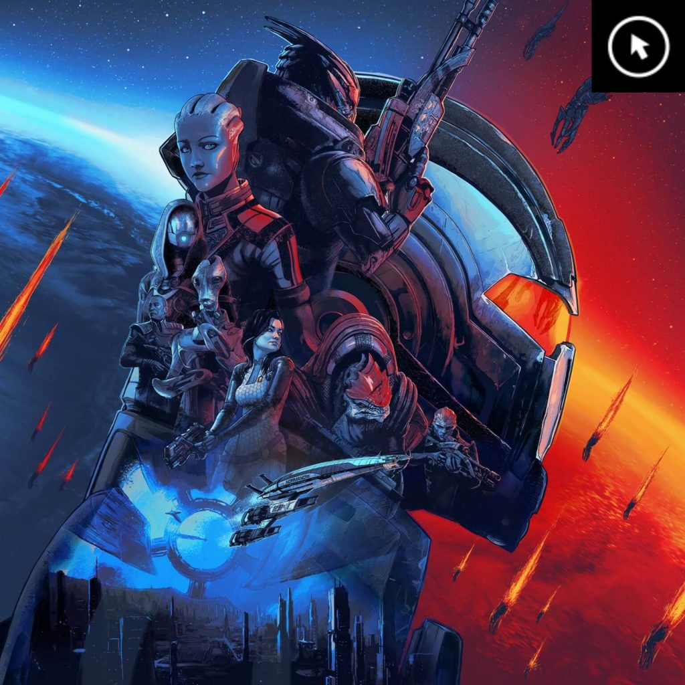

Technology & Security
Exploring cybersecurity, problem-solving, and how technology can be made safer and more useful.
INFORMATICS • DIGITAL CULTURE
I’m an Informatics student at Arizona State University interested in technology, design, and the ways people interact with digital experiences.
GET TO KNOW ME ↘01 / A LITTLE ABOUT ME
I study Informatics with a focus on Digital Culture Studies. I enjoy combining creative thinking with technology, whether I’m exploring web design, learning about cybersecurity, or working on projects with a team.
Outside of class, I enjoy contemporary dance, nature photography, and discovering places with interesting history and architecture.
02 / WHAT I'M INTERESTED IN
Exploring cybersecurity, problem-solving, and how technology can be made safer and more useful.
Learning how layout, color, typography, and interaction shape a person's experience online.
Finding creative expression through movement, performance, and capturing moments in nature.
03 / VISUAL INSPIRATION
These images are from the sample assets provided with the class materials. I’m using them to explore how visual design can create a mood and tell a story.
Using light, contrast, and imagery to create a memorable visual mood.

How a consistent visual style helps make a digital world feel immersive.
Recognizable colors and shapes can make an experience feel cohesive.
04 / SAY HELLO
I'm currently learning and building new skills one project at a time.
VISIT ASU